Introduction to INLA for geospatial modelling
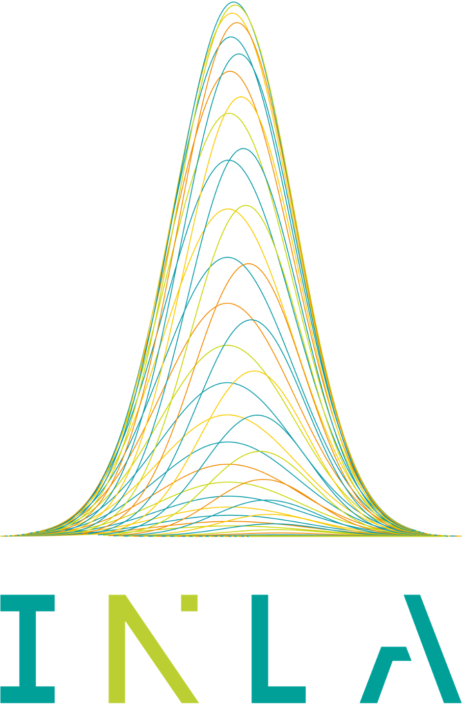
The following presentation is to accompany this tutorial can be foundHERE
Overview
In this workshop we will be taking you through an example of how to use the SPDE model using the R-INLA package. We will analyse parasite prevalence data from Madagascar. The topics we will cover include:
- How to create a mesh for the continuously indexed spatial effects
- Implementing the SPDE model in R-INLA
- Conducting simple model selection and best fit model
- Spatial prediction using R-INLA within and outside the fitting function (“inla”)
- Model validation
For a much more thorough description of R-INLA and the details underlying the SPDE models, please seeHarvard & Rue 2015
1. Data
All data for this session will be available on your USB in theINLA folder it should include:
Malaria prevalence data: Open-access malaria data hosted by the Malaria Atlas Project. We are using Madagascar for this example. (Note: we have pulled the latest MIS for Madagascar 2021)
Covariate data: a suite of satellite imagery
provided by MAP has been cleaned and processed for this tutorial. The
data is available uponrequest from MAP For
data cleaning and the preparation work please run the R-Scriptdata_prep.R
For this tutorial, you do not need to run the preparation work
script. The cleaned version of the data is available ininput/MDG_clean.Rdata
#load it properly without showing these results
load('INLA/input/MDG_clean.Rdata')load('INLA/input/MDG_clean.Rdata')2. Model Description
Let \(Y_i\) be the number of people tested positive (e.g. for malaria) which can be modelled as a binomial.
\[ Y_i \sim {\sf Binomial}(p(s_i), N_i) \] where \(p(s_i)\) is the probability of positive for location \(i\) and \(N_i\) is the number of examined. The linear predictor is expressed as linear combinations (thus, “linear”) of unknown parameters. The canonical link for the Binomial distribution is the logit function, which transforms probability [0,1] values into real values.
\[ logit(p(s_i)) = \beta_0 + X(s)\beta + \psi(s_i) \] where \(\beta_0\) is the Intercept and \(\beta\) is the covariate coefficient (slope). \(\psi(s_i)\) is a gaussian field that can be approximated using a Gaussian Markov random field (GMRF) and can be represented as: \[ \psi(s_i)\sim N(0,\Sigma) \] where \(\Sigma\) is a covariance matrix is determined by a spatial correlation function. In this case we will be using the Matern function:
\[ \frac{\sigma^2}{\Gamma(\lambda)2^{\lambda - 1}}(\kappa\parallel s_i - s_j\parallel)^\lambda K_\lambda(\kappa\parallel s_i - s_j\parallel) \] In this Bayesian context, we set priors for all parameters\[ \theta \sim \pi(\theta)\]
3. Libraries needed and Installation
for installation please use
packages <- c("malariaAtlas", "raster", "sp", "tidyverse",
"lattice", "gridExtra", "devtools", "rlang")
if(length(setdiff(packages, rownames(installed.packages()))) > 0) {
install.packages(setdiff(packages, rownames(installed.packages()))) }
#For INLA!!
if(length(setdiff("INLA", rownames(installed.packages()))) > 0){
install.packages("INLA", repos=c(getOption("repos"), INLA="https://inla.r-inla-download.org/R/stable"), dep=TRUE)
}for this workshop we have included in the scripts the packages that need to be loaded:
library(INLA)
library(malariaAtlas)
library(raster)
library(sp)
library(tidyverse)
library(lattice)
library(gridExtra)4. Creating the SPDE model
4.1 The Mesh Construction
Disclaimer: there is no rule to determine the right size and spatial extension of the mesh. It is up to the analyst to set the mesh parameters, which vary from case to case. Models based on mesh with a large number of vertices are more computationally demanding and may not necessarily lead to better results than coarser mesh. Therefore, we recommend using a relatively coarse mesh during the preliminary phase of the analysis and use a finer grid only as final step, when the results of the analysis are satisfactory. To get more details on how to build a mesh, see Section 2.1. ofLindgren and Rue paper:
In order to create the mesh, we require the coordinated for the observed data points. In our analysis we also created the outline of the island boundary, but this isn’t necessary.
coords = cbind(MDG_pr_data$longitude, MDG_pr_data$latitude)
bdry <- inla.sp2segment(MDG_shp)
bdry$loc <- inla.mesh.map(bdry$loc)Next we construct the mesh using coords. There are
mutiple arguments that are required to build the mesh:
max.edge is the largest allowed triangle length; the
lower the number the higher the resolutionmax.edge = c(inside the boundary triangle, outside the boundary triangle).
offset is defining how far you want to extend your
domain (i.e. a secondary boundary box) for inner boundary and outer
boundary; the offset goes with the max edge it should be in the same
geographical unit as the max.edge
NOTE: including boundary argument makes the inner
boundary value redundant. You can try by removing the boundary at this
point and you’ll see a different inner and outer edge. Secondly, without
the boundary, the mesh will be constructed based on a convex hull
surrounding the observed points (i.e. coords). There are
alternatives if you don’t want a non-convex hull.
cutoff can be used to avoid building too many small
triangles around clustered data locations
mesh0 <- inla.mesh.2d(loc = coords, boundary = bdry, max.edge=c(0.5))
mesh1 <- inla.mesh.2d(loc = coords, boundary = bdry, max.edge=c(0.5, 1))
mesh2 <- inla.mesh.2d(loc = coords, boundary = bdry, max.edge=c(0.5, 1),
offset = c(0.5,1))
mesh3 <- inla.mesh.2d(loc = coords, boundary = bdry, max.edge=c(0.5,1),
offset = c(0.5, 1),
cutoff = 0.3)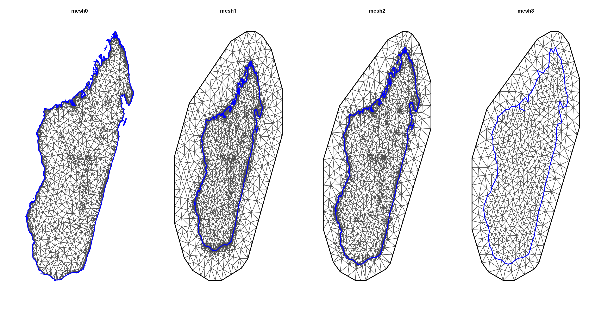
At this point, I would encourage you to try play with different values for each argument and observe the differences between the generated meshes.
the non-convex hull approach: we might want to use a mesh which is based on a non-convex hull to avoid adding many small triangles outside the domain of interest (more triangles = larger computation times), which can be done as follows:
non_convex_bdry <- inla.nonconvex.hull(coords, -0.03, -0.05, resolution = c(100, 100))
mesh4 <- inla.mesh.2d(boundary = non_convex_bdry, max.edge=c(0.5,1),
offset = c(0.5, 1),
cutoff = 0.3)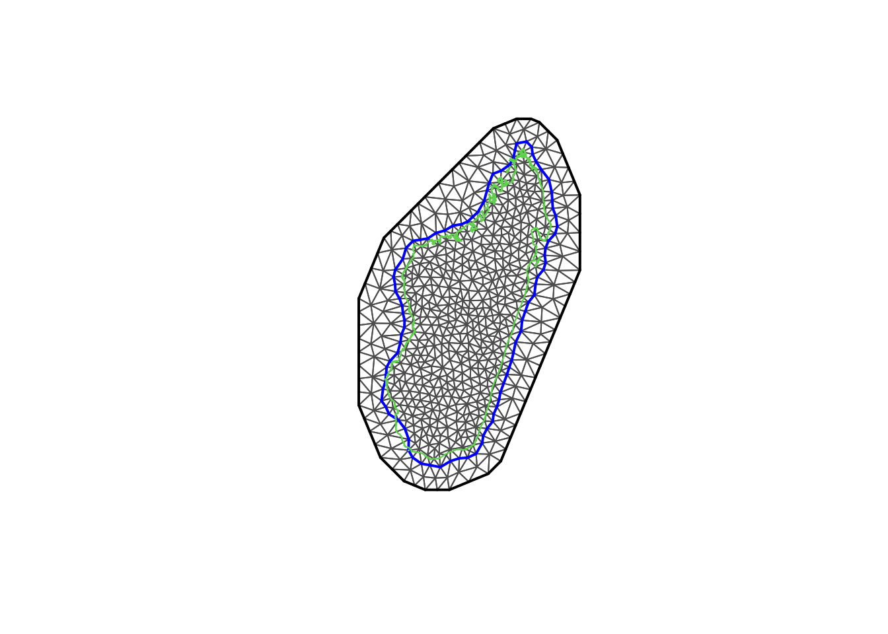
The non-convex hull provides a mesh different from what we have seen previously. There are certain situations where it can be useful; for example when one wishes to model separate islands from the mainland. For more information we recommend readingF Lindgren’s blog.
4.2. The SPDE and A matrix
Spatial models can be thought of as multivariate Gaussian models; the correlation structure is determined by a spatial covariance function (modelled as a Matern covariance function), the full Gaussian field is approximated by a Gaussian Markov Random Field (GMRF). The GMRF approximation is computationally intense, which is efficiently performed in the R-INLA using the SPDE model. There are two components that are required to map the GMRF into the SPDE form.
- the A matrix maps the Gaussian Markov Random Field (GMRF) from the mesh nodes to the n observation location. This is represented by a matrix with the number of observations as column and the number of nodes as rows.
A<-inla.spde.make.A(mesh=mesh3,loc=as.matrix(coords));dim(A)## [1] 647 572Next, we create the spatial structure (SPDE object). The SPDE object is approximate at the mesh node. We use alpha=2 (fixed here, other values are not tested).
spde <- inla.spde2.matern(mesh3, alpha=2)Lastly, we create all the required indexes for the SPDE model including naming the spatial field as “spatial.field”, which facilitates the extraction of the estimated values of the spatial field after the fitting process.
iset <- inla.spde.make.index(name = "spatial.field", spde$n.spde)4.3. the INLA stack
Since the covariates already are evaluated at the observation
locations, we only want to apply the A matrix to the spatial effect and
not the fixed effects. It is difficult to do this manually, but we can
use the inla.stack function. Think of it as creating a list of items you
require to build a model. The three main inla.stack()
arguments are a vector list with the data (data), a list of projector
matrices (each related to one block effect, A) and the list of effects
(effects). Optionally, a label can be assigned to the data stack (using
argument tag).
stk <- inla.stack(data=list(y=MDG_pr_data$pf_pos, n=MDG_pr_data$examined), #the response
A=list(A,1), #the A matrix; the 1 is included to make the list(covariates)
effects=list(c(list(Intercept=1), #the Intercept
iset), #the spatial index
#the covariates
list(Elevation = MDG_pr_data$Elevation,
Access_hf = MDG_pr_data$Access_hf,
Access=MDG_pr_data$Access,
LST_day = MDG_pr_data$LST_day,
Rain = MDG_pr_data$Rain,
EVI = MDG_pr_data$EVI)
),
#this is a quick name so you can call upon easily
tag='dat')Alternatively we can use an approximation to the natural Binomial likelihood using the empirical logit. This lets us use a Gaussian likelihood when model fitting, which can be computationally more tractable.
emplogit<-function(y, n){
# approximation of a log odds
# y: # of occurrences of interest
# n: # of tries
top=y+0.5
bottom=n-y+0.5
return(log(top/bottom))
}
MDG_pr_data$elogit <- emplogit(MDG_pr_data$pf_pos, MDG_pr_data$examined)
stk_el <- inla.stack(data=list(y=MDG_pr_data$elogit), #the response - now empirical logit
A=list(A,1), #the A matrix; the 1 is included to make the list(covariates)
effects=list(c(list(Intercept=1), #the Intercept
iset), #the spatial index
#the covariates
list(Elevation = MDG_pr_data$Elevation,
Access_hf = MDG_pr_data$Access_hf,
Access=MDG_pr_data$Access,
LST_day = MDG_pr_data$LST_day,
Rain = MDG_pr_data$Rain,
EVI = MDG_pr_data$EVI)
),
#this is a quick name so you can call upon easily
tag='dat-elogit')Two projector matrices are needed A = list(A,1): the
projector matrix for the latent field and a matrix that is a one-to-one
map of the covariate. The latter matrix can simply be a constant rather
than a diagonal matrix.
4.4. Model Fitting
The first step before fitting the model is to express the linear predictor (see Section 2). For the sake of simplicity, we use one covariate only (Elevation).
\[ logit(p(s_i)) = \beta_0 + \beta_1Elevation + \psi(s_i) \]
which translates to:
formula0<-y ~ -1 + Intercept + Elevation + f(spatial.field, model=spde) Note that to include the default ‘Intercept’ you can use +1. Some people prefer not to do this so they use -1 to exclude it and modify the data stack to include an intercept value in the effects list (just like us).
Once the formula is created we can fit the model
model0<-inla(formula0, #the formula
data=inla.stack.data(stk,spde=spde), #the data stack
family= 'binomial', #which family the data comes from
Ntrials = n, #this is specific to binomial as we need to tell it the number of examined
control.predictor=list(A=inla.stack.A(stk),compute=TRUE), #compute gives you the marginals of the linear predictor
control.compute = list(dic = TRUE, waic = TRUE, config = TRUE), #model diagnostics and config = TRUE gives you the GMRF
verbose = FALSE) #can include verbose=TRUE to see the log of the model runs4.5 INLA results
The results of the fitting process will be saved in your INLA object,
here defined as model0. The object contains a lot of
elements (51 elements). Here, we extract only the posterior distribution
summaries of the parameters of interest: the fixed effects (intercept
and Elevation) and hyper parameters (spatial field parameters).
model0$summary.fix## mean sd 0.025quant 0.5quant 0.975quant mode
## Intercept -4.1915072 0.4760832 -5.2162946 -4.1616739 -3.3369464 NA
## Elevation -0.1034586 0.2370299 -0.5757992 -0.1010635 0.3553386 NA
## kld
## Intercept 5.986905e-07
## Elevation 8.357766e-07model0$summary.hyperpar## mean sd 0.025quant 0.5quant 0.975quant
## Theta1 for spatial.field -3.479609 0.09100057 -3.6566708 -3.480393 -3.298740
## Theta2 for spatial.field 1.173788 0.14425568 0.8780802 1.178970 1.444205
## mode
## Theta1 for spatial.field NA
## Theta2 for spatial.field NAThe hyperparameters \(\theta_1\) is the \(log(\tau)\) and \(\theta_2\) is the \(log(\kappa)\) from the SPDE framework. Briefly, the SPDE that represents the GMRF is
\((\kappa^2 - \Delta)^{\alpha/2}(\tau \xi(s_i)) = W(s_i)\).
Where \(\kappa\) is the scale parameter and \(\tau\) controls the variance, and \(W(s)\) is the Gaussian Process. The posterior distribution of the hyperparameters \(\theta_1\) and \(\theta_2\) are difficult to interpret. We can transform them into more interpretable quantities such as the range, and the variance. The range is of particular interest. It provides the distance value (in the unit of the point coordinates) above which spatial dependencies become negligible.:
model0.res<-inla.spde2.result(model0, 'spatial.field', spde, do.transf=TRUE)
model0.res$summary.log.range.nominal## ID mean sd 0.025quant 0.5quant 0.975quant mode
## range.nominal.1 5 -0.1339356 0.1442505 -0.4042973 -0.1393148 0.1614458 NA
## kld
## range.nominal.1 0.1380252model0.res$summary.log.variance.nominal## ID mean sd 0.025quant 0.5quant 0.975quant mode
## variance.nominal.1 4 2.053882 0.227369 1.615255 2.050362 2.508834 NA
## kld
## variance.nominal.1 0.03607786the do.tranf = TRUE makes sure that marginals are
calculated in the same scale as the data.
Now let’s fit a model using all covariates:
#refit for best model:
formula<-y ~ -1 + Intercept + f(spatial.field, model=spde) + Access_hf + Access + Elevation + EVI + LST_day + Rain
model1<-inla(formula, data=inla.stack.data(stk,spde=spde),family= 'binomial',
Ntrials = n,
control.predictor=list(A=inla.stack.A(stk),compute=TRUE),
control.compute = list(dic = TRUE, waic = TRUE, config = TRUE),
verbose = FALSE) At this point, try exploring model1 using the code forINLA results. Is there anything new or interesting?
Let’s look at the results of our analysis. The posterior (marginal) distribution of the fixed and hyper parameters will provide key insight into the effect of the covariates and the structure of the spatial field, respectively.
##observe the plots for fixed parameters
par(mfrow=c(2,4))
plot(model1$marginals.fixed$Intercept, ty = "l", xlab = expression(beta[0]), ylab = "Density")
plot(model1$marginals.fixed$Access_hf, ty = "l", xlab = expression(beta[Access_hf]), ylab = "Density")
plot(model1$marginals.fixed$Access, ty = "l", xlab = expression(beta[Access]), ylab = "Density")
plot(model1$marginals.fixed$Elevation, ty = "l", xlab = expression(beta[Elevation]), ylab = "Density")
plot(model1$marginals.fixed$EVI, ty = "l", xlab = expression(beta[EVI]), ylab = "Density")
plot(model1$marginals.fixed$LST_day, ty = "l", xlab = expression(beta[LST_day]), ylab = "Density")
plot(model1$marginals.fixed$Rain, ty = "l", xlab = expression(beta[Rain]), ylab = "Density") 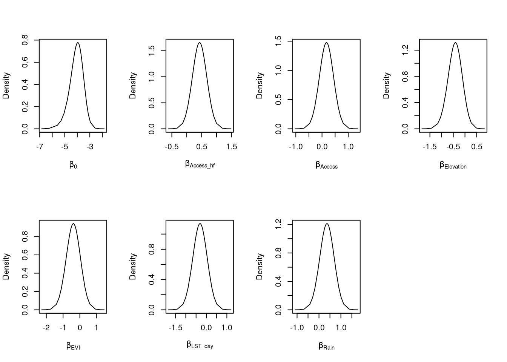
#observe the plots for hyper parameters
par(mfrow=c(1,3))
plot(model1.res$marginals.var[[1]], ty = "l", xlab = expression(sigma[randomfield]^2), ylab = "Density")
plot(model1.res$marginals.kap[[1]], type = "l", xlab = expression(kappa), ylab = "Density")
plot(model1.res$marginals.range[[1]], type = "l", xlab = "range nominal", ylab = "Density")
Lastly, we could take a look at the spatial field to understand the spatial structure. It can inform on potential omitted variable - how much of the variance in the dependent variable is not explained by the covariates.
#looking at the spatial field and what it looks like
gproj <- inla.mesh.projector(mesh3, dims = c(300, 300))
g.mean <- inla.mesh.project(gproj, model1$summary.random$spatial.field$mean)
g.sd <- inla.mesh.project(gproj, model1$summary.random$spatial.field$sd)
grid.arrange(levelplot(g.mean, scales=list(draw=F), xlab='', ylab='', main='mean',col.regions = heat.colors(16)),
levelplot(g.sd, scal=list(draw=F), xla='', yla='', main='sd' ,col.regions = heat.colors(16)), nrow=1)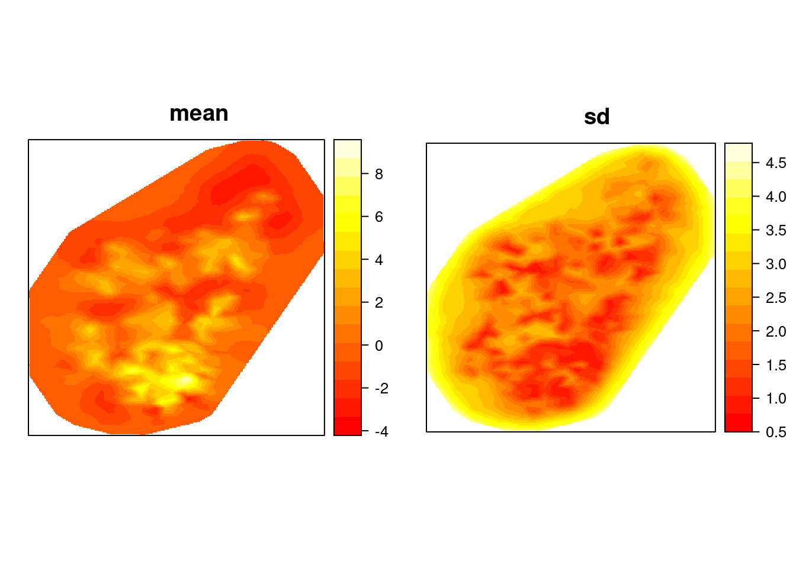
4.5 Empirical logit version
Now let’s fit a model using all covariates and the Gaussian approximation:
#refit for best model:
formula<-y ~ -1 + Intercept + f(spatial.field, model=spde) + Access_hf + Access + Elevation + EVI + LST_day + Rain
model2<-inla(formula, data=inla.stack.data(stk_el,spde=spde),family= 'gaussian',
control.predictor=list(A=inla.stack.A(stk),compute=TRUE),
control.compute = list(dic = TRUE, waic = TRUE, config = TRUE),
verbose = FALSE) Let’s see what’s changed in the results by exploringmodel2 using the code for INLA results. Is there
anything new or interesting?
Let’s look at the results of our analysis. The posterior (marginal) distribution of the fixed and hyper parameters will provide key insight into the effect of the covariates and the structure of the spatial field, respectively.
##observe the plots for fixed parameters
par(mfrow=c(2,4))
plot(model2$marginals.fixed$Intercept, ty = "l", xlab = expression(beta[0]), ylab = "Density")
plot(model2$marginals.fixed$Access_hf, ty = "l", xlab = expression(beta[Access_hf]), ylab = "Density")
plot(model2$marginals.fixed$Access, ty = "l", xlab = expression(beta[Access]), ylab = "Density")
plot(model2$marginals.fixed$Elevation, ty = "l", xlab = expression(beta[Elevation]), ylab = "Density")
plot(model2$marginals.fixed$EVI, ty = "l", xlab = expression(beta[EVI]), ylab = "Density")
plot(model2$marginals.fixed$LST_day, ty = "l", xlab = expression(beta[LST_day]), ylab = "Density")
plot(model2$marginals.fixed$Rain, ty = "l", xlab = expression(beta[Rain]), ylab = "Density") 
#observe the plots for hyper parameters
par(mfrow=c(1,3))
plot(model2.res$marginals.var[[1]], ty = "l", xlab = expression(sigma[randomfield]^2), ylab = "Density")
plot(model2.res$marginals.kap[[1]], type = "l", xlab = expression(kappa), ylab = "Density")
plot(model2.res$marginals.range[[1]], type = "l", xlab = "range nominal", ylab = "Density")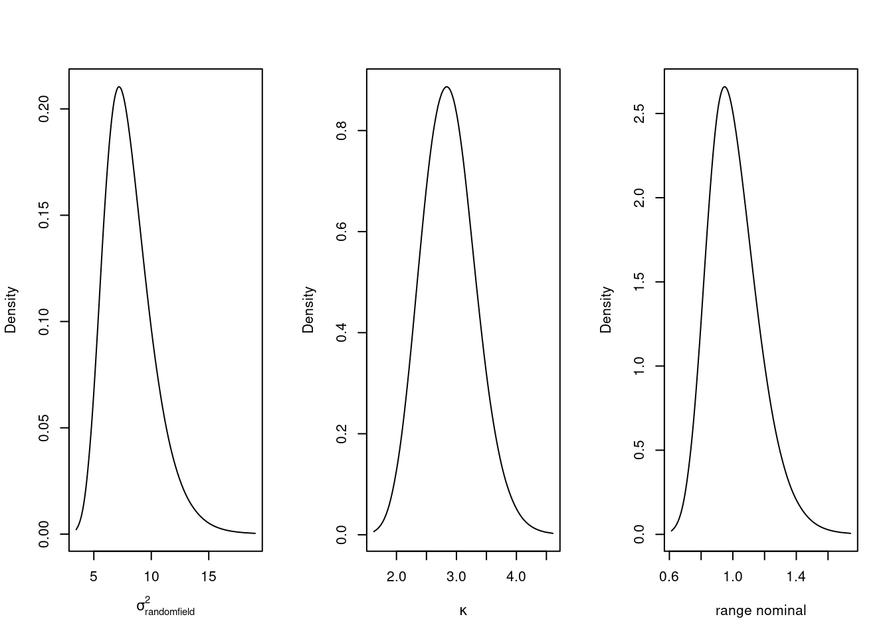
And has the spatial field changed much?
#looking at the spatial field and what it looks like
gproj <- inla.mesh.projector(mesh3, dims = c(300, 300))
g.mean <- inla.mesh.project(gproj, model2$summary.random$spatial.field$mean)
g.sd <- inla.mesh.project(gproj, model2$summary.random$spatial.field$sd)
grid.arrange(levelplot(g.mean, scales=list(draw=F), xlab='', ylab='', main='mean',col.regions = heat.colors(16)),
levelplot(g.sd, scal=list(draw=F), xla='', yla='', main='sd' ,col.regions = heat.colors(16)), nrow=1)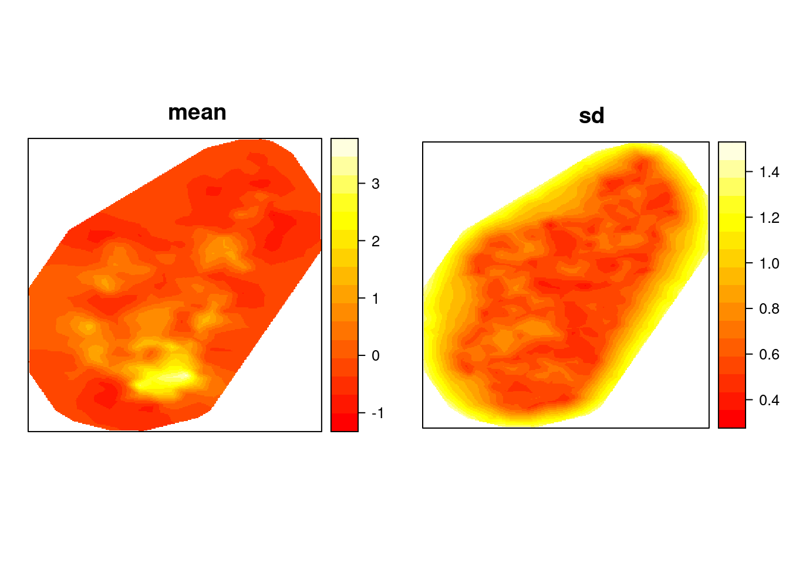
5. Model Prediction
Finally, we would like to calculate a prediction of the expected malaria prevalence on a dense grid in Madagascar. There are two methods we would like to show you; a) predicting within the “inla” function to fit the model; b) outside the “inla” function to fit the model. Option a) has the advantage to make the code more compact; however, it may drastically increase the computational costs compared to option b).
In order to do either, we first need to create the grid to do the prediction on.
reference.image <- raster('INLA/covariates/Access.tif')
in.country <- which(!is.na(getValues(reference.image)))
reference.coordinates <- coordinates(reference.image)[in.country,]
#make these into points and extract covariates for prediction grid
pred.points <- SpatialPoints(reference.coordinates, proj4string = crs(MDG_shp))
covs <- list.files('INLA/covariates/', pattern = ".tif$",full.names = T)[1:3] %>% stack()
pred.covs <- raster::extract(covs, pred.points, df=T)reference.image <- raster('INLA/covariates/Access.tif')
in.country <- which(!is.na(getValues(reference.image)))
reference.coordinates <- coordinates(reference.image)[in.country,]
#make these into points and extract covariates for prediction grid
pred.points <- SpatialPoints(reference.coordinates, proj4string = crs(MDG_shp))
covs <- list.files('INLA/covariates/', pattern = ".tif$",full.names = T)[1:3] %>% stack()
pred.covs <- raster::extract(covs, pred.points, df=T)we will also need to remake the observation A matrix for the prediction coordinates.
#remake the A matrix for prediction
Aprediction <- inla.spde.make.A(mesh = mesh3, loc = reference.coordinates)
dim(Aprediction)## [1] 29350 5725.1 Prediction within the “inla” fitting function
To predict within the “inla” fitting function, we will need to create an inla stack for prediction. Note that for the response in the prediction stack we will set it to y=NA. Lastly, we join the prediction and observed data stack together.
stk.pred <- inla.stack(data=list(y=NA),
A=list(Aprediction,1),
effects=list(c(list(Intercept=1)
,iset),
list(Elevation = pred.covs$Elevation,
Access_hf=pred.covs$Access_hf,
Access=pred.covs$Access
)
),
tag='pred')
#join the prediction stack with the one for the full data
stk.full <- inla.stack(stk, stk.pred)
stk.full.el <- inla.stack(stk_el, stk.pred)Doing the joint estimation takes a while, and we therefore amend the
code to remove the computation of unnecessary objects and make the
numerical approximation faster. For this purpose, we usecompute = FALSE (not needed here since we make predictions
within the “inla” function). We also use a simplified integration
strategy (actually only using the posterior mode of the
hyper-parameters) through the command control.inla = list(int.strategy =
“simplified.laplace”, huge = TRUE), and defining that the dataset is
huge. we need to include link=1 connects the unobservedy=NA to the family. Just remember if you run this code, it WILL
take a while (when I ran took 2814.261 seconds).
Using the Gaussian approximation should be much faster…
p.res.pred<-inla(formula, data=inla.stack.data(stk.full,spde=spde),
family= 'binomial', quantiles = NULL,
Ntrials = n,
control.predictor=list(link = 1, A=inla.stack.A(stk.full),compute=FALSE), #compute gives you the marginals of the linear predictor
control.compute = list(config = TRUE), #model diagnostics and config = TRUE gives you the GMRF
control.inla(strategy = 'simplified.laplace', int.strategy='eb', huge = TRUE), #this is to make it run faster
verbose = FALSE) p.res.pred<-inla(formula, data=inla.stack.data(stk.full.el,spde=spde),
family= 'gaussian', quantiles = NULL,
control.predictor=list(link = 1, A=inla.stack.A(stk.full),compute=FALSE), #compute gives you the marginals of the linear predictor
control.compute = list(config = TRUE), #model diagnostics and config = TRUE gives you the GMRF
control.inla(strategy = 'gaussian', int.strategy='eb'), #this is to make it run faster
verbose = FALSE) Finally, we extract the indices to the prediction nodes and then extract the posterior mean of the response. Remember that the output is in logit form and needs to be transformed.
index.pred<-inla.stack.index(stk.full, "pred")$data
post.mean.pred.logit<-p.res.pred$summary.linear.predictor[index.pred,"mean"]
p.pred<-exp(post.mean.pred.logit)/(1 + exp(post.mean.pred.logit))We can visualise the posterior mean to see what it looks like:
x <- as.matrix(reference.coordinates)
z <- as.matrix(p.pred)
pr.mdg.in<-rasterize(x, reference.image, field=z, fun='last', background=NA)
par(mfrow=c(1,1))
plot(pr.mdg.in, main = 'Prediction using INLA')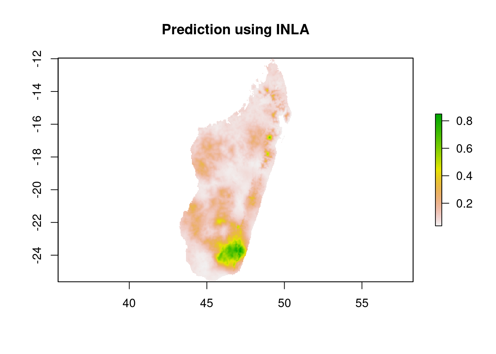
5.2 Prediction outside the “inla” fitting function
A more optimised method for prediction would be to reconstruct the algebra outside the “inla” fitting function and use the posterior means for the parameters from the model fit.
## using results from Model1
model = model1
## recall:: formula<-y ~ -1 +Intercept + f(spatial.field, model=spde) + Access + Access_hf + Elevation
# Covariates for prediction points
Access<- pred.covs$Access
Access_hf<- pred.covs$Access_hf
Elevation <- pred.covs$Elevation
#create the spatial structure
sfield_nodes <- model$summary.random$spatial.field['mean']
field <- (Aprediction %*% as.data.frame(sfield_nodes)[, 1])
#make empty matrix to fill predictions
pred <- matrix(NA, nrow = dim(Aprediction)[1], ncol = 1)
## Calculate Predicted values using regression formula
pred <- model$summary.fixed['Intercept', 'mean'] +
model$summary.fixed['Access', 'mean'] * Access +
model$summary.fixed['Access_hf', 'mean'] * Access_hf +
model$summary.fixed['Elevation', 'mean'] * Elevation +
field
# write results in csv
results <- exp(pred)/(1+exp(pred))and plot this
# write results as a raster
x <- as.matrix(reference.coordinates)
z <- as.matrix(results)
pr.mdg.out <- rasterFromXYZ(cbind(x, z))
plot(pr.mdg.out, main = 'Prediction outside INLA')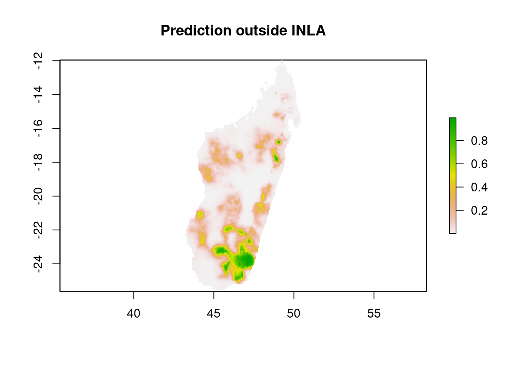
These maps look a bit different to the ones we made above, because we’ve used Model 1 (which used a Binomial likelihood, but is too slow to predict inside INLA in this session!). We can repeat this exercise with Model 2 to check the outputs really are identical using the two different prediction methods.
## using results from Model2
model = model2
## recall:: formula<-y ~ -1 +Intercept + f(spatial.field, model=spde) + Access + Access_hf + Elevation
# Covariates for prediction points
Access<- pred.covs$Access
Access_hf<- pred.covs$Access_hf
Elevation <- pred.covs$Elevation
#create the spatial structure
sfield_nodes <- model$summary.random$spatial.field['mean']
field <- (Aprediction %*% as.data.frame(sfield_nodes)[, 1])
#make empty matrix to fill predictions
pred <- matrix(NA, nrow = dim(Aprediction)[1], ncol = 1)
## Calculate Predicted values using regression formula
pred <- model$summary.fixed['Intercept', 'mean'] +
model$summary.fixed['Access', 'mean'] * Access +
model$summary.fixed['Access_hf', 'mean'] * Access_hf +
model$summary.fixed['Elevation', 'mean'] * Elevation +
field
# write results in csv
results <- exp(pred)/(1+exp(pred))and plot this
# write results as a raster
x <- as.matrix(reference.coordinates)
z <- as.matrix(results)
pr.mdg.out <- rasterFromXYZ(cbind(x, z))
plot(pr.mdg.out, main = 'Prediction outside INLA')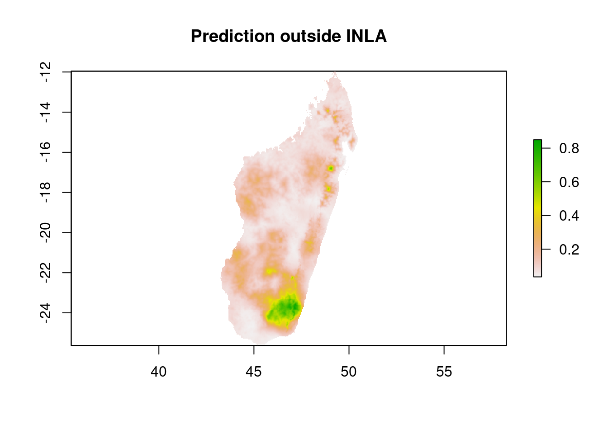
You will notice the maps look very similar which expected, as these two ways of making predictions are identical.
6. Model Validation
It is important to assess how does the model perform when we have new data. There are various approaches to assess the predictive performance of models. Here, we focus on one cross-validation approach that can be performed with R-INLA. In this approach, we will split the data into a Training and Testing set. Then, we will make predictions as shown in Section 6.1.
First let’s split the data and make the observations in the test setNA (We set the predicted values as NA. This
might not sound intuitive but in R-INLA, this is an easy way to make
predictions).
## 75% of the sample size
smp_size <- floor(0.75 * nrow(MDG_pr_data))
## set the seed to make your partition reproducible
set.seed(123)
train_ind <- sample(seq_len(nrow(MDG_pr_data)), size = smp_size, replace = FALSE)
train <- MDG_pr_data[train_ind, ]
test <- MDG_pr_data[-train_ind, ]
test$positive <- test$pf_pos <- NA #make the y values for test NA
#lastly, create the training and testing coordinates
train_coords <- coords[train_ind,]
test_coords <- coords[-train_ind,]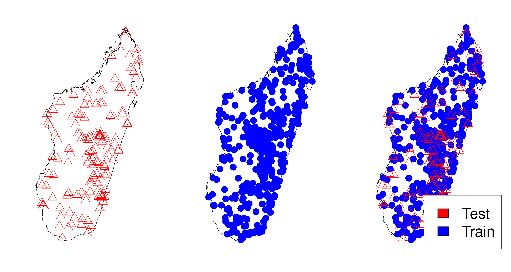
Next, we create the A matrix for training and testing data. Note: we are using the same mesh3 and spde that we have made in section 4.1 and 4.2 respectively
Ae<-inla.spde.make.A(mesh=mesh3,loc=as.matrix(train_coords));dim(Ae)## [1] 485 572Ap <- inla.spde.make.A(mesh = mesh3, loc = test_coords);dim(Ap)## [1] 162 572Build the stacks for prediction and estimates
stk.e <- inla.stack(data=list(y=train$pf_pos, n=train$examined),
A=list(Ae,1),
effects=list(c(list(Intercept=1)
,iset),
list(Elevation = train$Elevation,
Access=train$Access,
Access_hf=train$Access_hf,
LST_day = train$LST_day,
Rain = train$Rain,
EVI = train$EVI)
),
tag='est')
stk.p <- inla.stack(data=list(y=test$pf_pos, n=test$examined),
A=list(Ap,1),
effects=list(c(list(Intercept=1)
,iset),
list(Elevation = test$Elevation,
Access=test$Access,
Access_hf=test$Access_hf,
LST_day = test$LST_day,
Rain = test$Rain,
EVI = test$EVI)
),
tag='pred')
#put them together
stk.full <- inla.stack(stk.e, stk.p)Then re-run the INLA fit for prediction within R-INLA
p.res<-inla(formula, data=inla.stack.data(stk.full,spde=spde),family= 'binomial',
Ntrials = n,
control.predictor=list(link = 1, A=inla.stack.A(stk.full),compute=TRUE), #compute gives you the marginals of the linear predictor
control.compute = list(config = TRUE), #model diagnostics and config = TRUE gives you the GMRF
verbose = FALSE) #can include verbose=TRUE to see the logLastly, we can get the results from the INLA model and compare the prediction to the observation for the test set
#getting the predictions
index.pred <- inla.stack.index(stk.full, "pred")$data
post.mean.logit <- p.res$summary.linear.predictor[index.pred,'mean'] #the posterior is in logit form
pred <- exp(post.mean.logit)/(1 + exp(post.mean.logit))
obs <- test$pf_pr #this is the number pos/number examined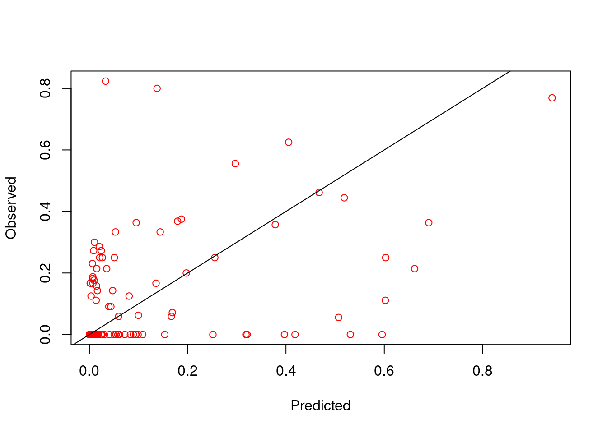
## [1] 0.462323The validation plot shows that the model fits pretty well. But it is important to remember that this isn’t always the case. How would you improve this model?
Optional Extra
Model Selection
There is a rich literature on variable selection in the field of
statistics. A discussion of this topic would go beyond the scope of this
tutorial. However, we show some ways to select variables using R-INLA
built-in functions. Mainly we will be focus on metrics that we can
include in R-INLA using control.compute function. In this
function, one can extract several metrics helpful to select variables,
including DIC, CPO/PIT, and WAIC. In the following example, we will
focus on WAIC, but one can similarly extract DIC and CPO/PIT
metrics.
###model selection with WAIC (other criteria can be used)
for(i in 1:6){
f1 <- as.formula(paste0("y ~ -1 + Intercept + f(spatial.field, model=spde) + ", paste0(colnames(covs_df)[1:i], collapse = " + ")))
model1<-inla(f1, data=inla.stack.data(stk,spde=spde),family= 'binomial',
Ntrials = n,
control.predictor=list(A=inla.stack.A(stk),compute=TRUE),
control.compute = list(dic = TRUE, cpo=TRUE, waic = TRUE)) #verbose=TRUE,
model_selection <- if(i==1){rbind(c(model = paste(colnames(covs_df)[1:i]),waic = model1$waic$waic))}else{rbind(model_selection,c(model = paste(colnames(covs_df)[1:i],collapse = " + "),waic = model1$waic$waic))
}
}
model_selectionWhich model would you choose?
Additional Information
If you’d like some hints, please see the paper from Su Kang:
(Su Yun Kang, Katherine E. Battle, Harry S. Gibson, Arsène Ratsimbasoa, Milijaona Randrianarivelojosia, Stéphanie Ramboarina, Peter A. Zimmerman, Daniel J. Weiss, Ewan Cameron, Peter W. Gething & Rosalind E. Howes (2018). Spatio-temporal mapping of Madagascar’s Malaria Indicator Survey results to assess Plasmodium falciparum endemicity trends between 2011 and 2016. BMC Medicine 16, Article number: 71)
We hope you have enjoyed the tutorial and found it insightful. We are always happy to improve our material and encourage users to reach out the MAP team.
Some other useful resources to get more indepth with INLA are:
-
The R-INLA webpage : http://www.r-inla.org/
-
Spatial and Spatio-temporal Bayesian Models with R-INLA: https://sites.google.com/a/r-inla.org/stbook/
-
Bayesian inference with INLA and R-INLA: https://becarioprecario.bitbucket.io/inla-gitbook/index.html